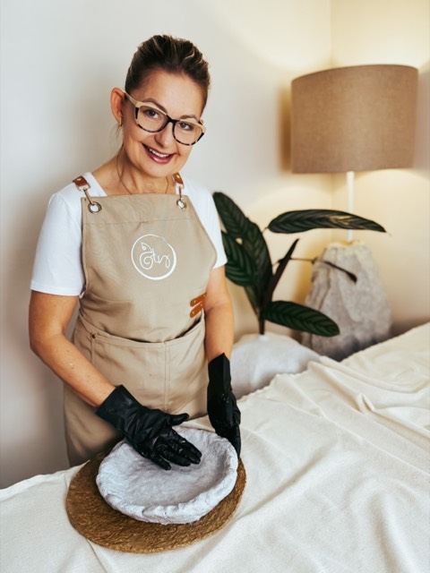
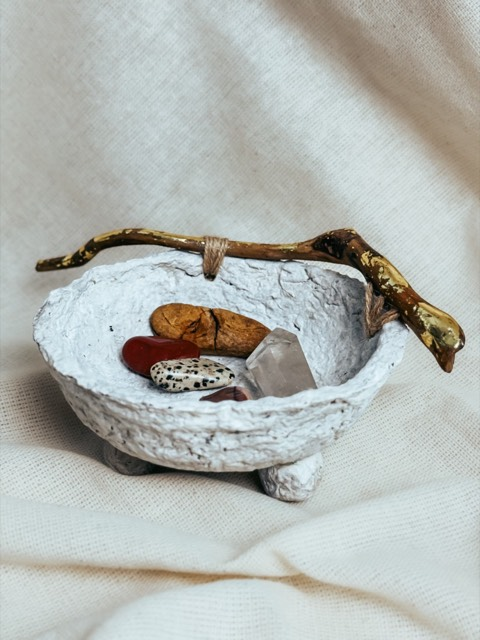
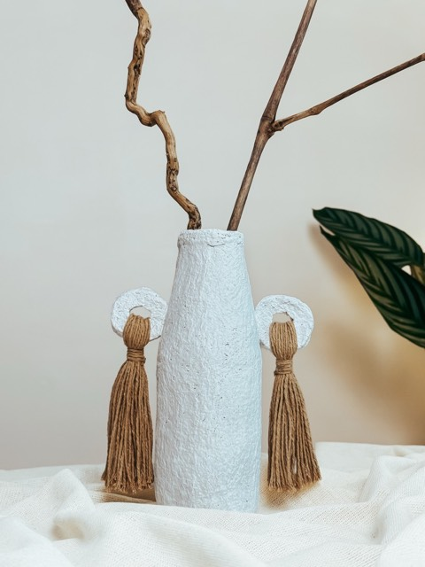

Simone Strey
Criadora do Método STY. Ensina a transformar papel e papelão em peças resistentes, com aparência de pedra.




Criadora do Método STY. Ensina a transformar papel e papelão em peças resistentes, com aparência de pedra.

